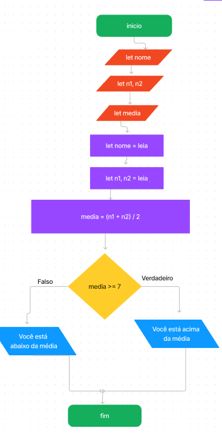

<script>
    // Algoritmo vai calcular a média de um aluno e verificar se ele está ou não dentro da média

    // Declaração de variaveis
    let nome;
    let n1;
    let n2;
    let media;

    // Entrada de dados e processamento
    nome = prompt('Digite o seu nome: ')
    n1 = Number(prompt('Digite a primeira nota: '));
    n2 = Number(prompt('Digite a segunda nota: '));
    media = (n1 + n2) / 2;

    //estrutura condicional 
    if(media >= 7){
        document.write(`A nota de ${nome} é ${media}, e está acima da média parabéns!`)
    }else{
        document.write(`A nota de ${nome} é ${media}, e está abaixo da média estude mais`)
    }


</script>